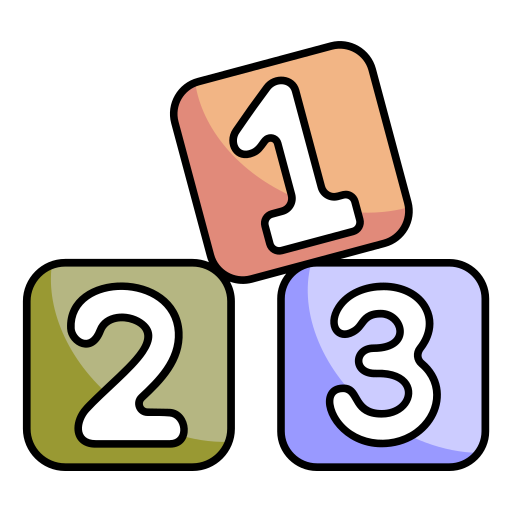

Determinar número mayor
Crear un nuevo repositorio y copiar todos los ejercicios condicionales allí (Ejercicios condicionales). Cambiar todas las funciones tradicionales por funciones flecha.

Crear un nuevo repositorio y copiar todos los ejercicios condicionales allí (Ejercicios condicionales). Cambiar todas las funciones tradicionales por funciones flecha.
